Interactive demo
Visualizing rate limit algorithms
Five live demos — same logic as src/ratelimit/strategy/.
Lab clock at 2026-08-15T12:00:00Z with 1× / 2× / 3× speed.
HLD and LLD diagrams are at the bottom.
Inspired by interactive write-ups like smudge.ai on rate limits — one algorithm per section, prose + playground.
High-level design (HLD)
Gateway rate limiting at scale — client identity, rules engine, Zookeeper config, Redis cluster, and microservices.

Low-level design (LLD)
UML class diagram, request path, build order, and algorithm notes. Deep dive: HOW_WE_BUILT_IT.md.
Loading LLD…
Notes
Complete LLD + HLD master article — algorithms, Redis/Lua, cluster, failures, observability. Rendered from the embedded source below (styled, unedited).
Loading notes…